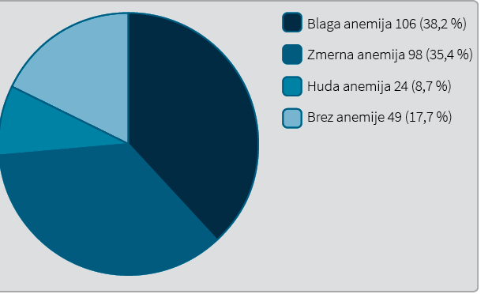
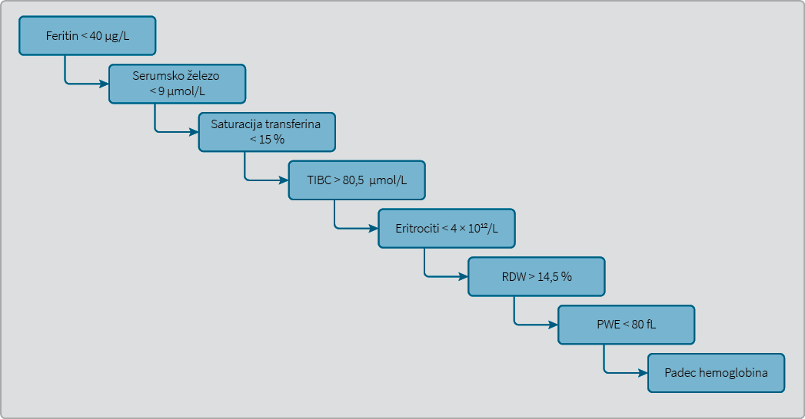
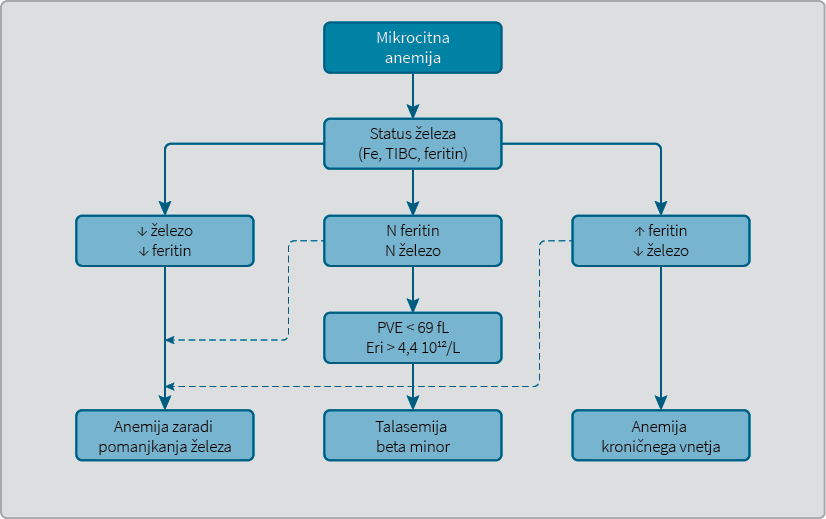

Analiza bolnikov z anemijo zaradi pomanjkanja železa v hematološki ambulanti
Survey of patients with iron deficiency anemia in haematology outpatient clinic
Izvleček
Abstract
1 Uvod
Anemija zaradi pomanjkanja železa je edina anemija, ki v enakem obsegu prizadene tako revne kot bogate sloje. V razvitem svetu je pogostejša pri ženskah v rodni dobi zaradi obilnih menstruacij (1). Pogosteje jo ugotavljamo pri osebah, ki redno jemljejo nesteroidne antirevmatike in zaviralce protonske črpalke, slednje verjetno zaradi ulkusne bolezni in zmanjšanja kislosti želodčnega soka (2). Pomanjkljiva prehrana je redko vzrok SDA v razvitem svetu. Lahko pa se pojavi pri ljudeh, ki se poslužujejo nenavadnih diet (1). Vzroki so tudi skrajno nenavadni; anemijo zaradi pomanjkanja železa lahko najdemo pri bolnikih s sindromom Münchausen (3). V deželah tretjega sveta na račun pomanjkljive prehrane in parazitskih okužb prizadane predvsem otroke, mladostnike in nosečnice (1). Ko SDA ugotovimo moškim ali ženskam v menopavzi, je prva misel izključiti raka prebavil (4). Zdravljenje z nadomeščanjem železa je pri SDA zgolj simptomatski ukrep. Ključno je poiskati vzrok in ga odpraviti. V prispevku predstavljamo rezultate analize bolnikov, ki so bili v dveletnem obdobju napoteni v ambulanto KOH z napotno diagnozo SDA, in tistih, pri katerih smo z anamnezo in kliničnim pregledom, upoštevajoč laboratorijske izvide, odkrili SDA. V prispevku se osredinjamo na prepoznavanje te anemije, diagnosticiranje vzrokov, možnosti zdravljenja z oralnimi in intravenskimi železovimi pripravki ter obravnavo bolnikov v primeru, da z nadomeščanjem ni ustreznega odziva.
2 Material in metode
Retrospektivno smo analizirali popise 277 bolnikov, ki so bili med 1.1. 2014 in 31.12. 2015 napoteni v ambulanto KOH zaradi SDA, vključno tiste bolnike, pri katerih smo v hematološki ambulanti s kliničnim pregledom, upoštevajoč laboratorijske izvide, postavili diagnozo SDA. Zanimala nas je starost in spol bolnikov, napotna diagnoza, prisotnost simptomov in znakov anemije, vrednost hemoglobina, eritrocitov, povprečne prostornine eritrocita (PVE), serumskega železa, celotne vezalne sposobnosti seruma za železo (
V raziskavi smo uporabili naslednje referenčne vrednosti:
|
Razdelitev anemij |
koncentracija hemoglobina |
|
Blaga |
100–120 g/L (ženske) 100–130 g/L (moški) |
|
Zmerna |
70–100 g/L |
|
Huda |
< 70 g/L |
•Hemoglobin: 120–160 g/L za ženske in 130–180 g/L za moške (5).
•Hematokrit: 0,30–0,47 za ženske in 0,40–0,54 za moške; povprečni volumen (PVE): 82–98 fL; eritrociti: 4,2–5,4 × 1012/L za ženske in 5,4–6,3 × 1012/L za moške; levkociti: 3,9–11,1 × 109/L; trombociti: 157–384 × 109/L (6).
•Serumsko železo: 10,7–28,6 µmol/L; feritin: 10–120 μg/L za ženske in 20–300 μg/L za moške; totalna vezalna sposobnost za železo (TIBC): 44,8–80,6 µmol/L; povišan C-reaktivni protein: vrednost nad 5 mg/L; kreatinin: 44–97 µmol/L; povišana aspartatna transaminaza (AST): 3-kratna zgornja meja (0,52 µkat/L) za ženske in 3-kratna zgornja meja (0,58 µkat/L) za moške; povišana alaninska transaminaza (ALT): 3-kratna zgornja meja (0,56 µkat/L) za ženske in 3-kratna zgornja meja (0,74 µkat/L) za moške (7).
Raziskavo je odobrila Komisija za medicinsko etiko RS dne 14. 11. 2017 (sklep št. 0120–583/2017/5).
3 Rezultati
Analizirali smo obravnavo 277 bolnikov, pregledanih od 1.1. 2014 do 31.12. 2015 v ambulanti KOH, pri katerih smo ugotovili anemijo zaradi pomanjkanja železa. Moških je bilo 32 (11,6 %). Ženske so bile zastopane v 88,4 % (245). 172 (62,1 %) žensk je bilo v rodni dobi in 73 (26,3 %) žensk v menopavzi. Mediana starosti pri moških je bila 66,5 let (razpon 21–87 let). Mediana starosti pri ženskah je bila 44 let (razpon od 18–94 let). V Tabeli 2 so predstavljeni izsledki povprečnih vrednosti kazalcev rdeče krvne slike. Večina napotenih bolnikov je imela vrednosti hemoglobina v območju blage in zmerne anemije. Malo manj kot petina pregledanih bolnikov je imela vrednost hemoglobina v referenčnem območju. Slika 1 prikazuje porazdelitev anemij glede na vrednost hemoglobina.
|
Laboratorijski kazalci |
Ženske |
Moški |
|
Povprečna vrednost hemoglobina (g/L) |
100,5 (σ = ± 20,4) |
101,5 (σ = ± 23,3) |
|
Povprečna vrednost eritrocitov (1012/L) |
4,18 (σ = ± 0,62) |
4,13 (σ = ± 0,95) |
|
Povprečna vrednost serumskega železa (µmol/L) |
8,3 (σ = ± 10,9) |
|
|
Povprečna vrednost feritina (μg/L ) |
21,6 (σ = ± 70,5) |
|
|
Povprečna vrednost TIBC (µmol/L) |
71,3 (σ = ± 10,6) |
|
TIBC – angl. totalna vezalna sposobnost za železo, σ – standardni odklon

Bolnike so izbrani zdravniki napotili z napotnimi diagnozami, ki so po pogostosti opisane v Tabeli 3.
|
Napotna diagnoza |
n = 277 (%) |
|
Anemija zaradi pomanjkanja železa |
108 (39) |
|
Mikrocitna anemija |
77 (27,8) |
|
Anemija |
30 (10,8) |
|
Levkopenija |
5 (1,8) |
|
Trombocitopenija |
5 (1,8) |
|
Pomanjkanje železa |
4 (1,4) |
|
Bicitopenija |
4 (1,4) |
|
Normocitna anemija |
4 (1,4) |
|
Ostalo |
40 (14,6) |
Preostale napotne diagnoze so bile potenje, monoklonski zobec, slabo počutje, monoklonski imunoglobulin nedoločenega pomena (MINP), sum na mielodisplastični sindrom (MDS), sum na talasemijo, pancitopenija, kronična anemija, makrocitoza, pomanjkanje vitamina B12, periferna nevropatija, sum na hemolitično anemijo, pozitivni Coombsov test, zlatenica idr.
Po mnenju izbranega zdravnika je bil pregled nujen pri 12 bolnikih (4,3 %). Med njimi je imel 1 bolnik blago anemijo, 7 bolnikov zmerno in 6 bolnikov hudo anemijo.
V kliničnem statusu ob pregledu v ambulanti KOH je bila kot edini znak anemije opisana bledica kože. Zabeležili smo jo pri 145 (52,3 %) bolnikov.
Kot je razvidno iz Tabele 4, so bile anemiji pogosto pridružene druge spremembe v krvni sliki.
|
Pridružena sprememba v krvni sliki |
n = 277 (%) |
|
Levkopenija |
21 (7,6) |
|
Levkocitoza |
16 (5,8) |
|
Trombocitopenija |
20 (7,2) |
|
Trombocitoza |
46 (16,6) |
|
Pancitopenija |
4 (1,4) |
Iz Tabele 5 ugotovimo, da smo vsaj eno pridruženo bolezen ugotavljali pri 139 (50,2 %) napotenih bolnikov.
|
Pridružena bolezen/stanje |
n = 277 (%) |
|
Sladkorna bolezen tipa 2 |
23 (8,3) |
|
Avtoimunska bolezen* |
23 (8,3) |
|
Hipotiroza |
18 (6,5) |
|
Rak |
8 (2,9) |
|
Srčno popuščanje |
8 (2,9) |
|
Okultna krvavitev iz prebavil |
6 (2,2) |
|
Nosečnost |
5 (1,8) |
|
Kronična ledvična odpoved |
3 (1,1) |
|
Drugo |
69 (24,9) |
* ulcerozni kolitis, Chronova bolezen, revmatoidni artritis, tiroiditis Hashimoto, celiakija, Sjögrenov sindrom, sistemska skleroza, sladkorna bolezen tipa 1
Tri ali več pridruženih bolezni je imelo 35 (12,6 %) bolnikov.
Pri skupini bolnikov, pri katerih smo z anamnezo ugotavljali kronične bolezni, smo povišan C-reaktivni protein zabeležili pri 54 (19,5 %) bolnikih, nepravilnosti jetrnih transaminaz pri 5 (1,8 %) bolnikih in povišano vrednost sečnine in kreatinina pri eni bolnici. Pri 4 bolnicah (1,4 %) je hematolog v izvidih navedel poleg diagnoze SDA tudi anemijo kroničnega vnetja.
Na kontrolni pregled pri hematologu je bilo naročenih 173 (62,5 %) bolnikov. Razlog kontrolnega pregleda je bil pri 133 (48 %) bolnikih kontrola krvne slike po zdravljenju z železovimi pripravki. V 144 (52 %) primerih se je hematolog odločil za nadaljnje diagnostične ukrepe v sklopu SDA.
163 (58,8 %) bolnikov se je zaradi SDA zdravilo bodisi v preteklosti ali pa je železo prejemalo ob prvem obisku v ambulanti. 144 (52 %) bolnikov se je zdravilo z oralnimi pripravki železa. 30 (10,8 %) jih je prejelo intravenske pripravke. 9 (3,2 %) bolnikov je prejelo transfuzijo koncentriranih eritrocitov. Za ostale bolnike ni podatka. 210 (75,8 %) vseh pregledanih bolnikov je prejelo zdravljenje oz. navodila za zdravljenje. Med njimi je 176 (83,9 %) bolnikov prejelo intravenski pripravek železa in 12 (5,5 %) bolnikov transfuzijo koncentriranih eritrocitov. 9 (30 %) bolnikov, ki so ob prvem ambulantnem pregledu prejeli intravensko železo, so prejeli še drugi odmerek intravenskega železa v ambulanti KOH. Med bolniki, ki so bili najprej zdravljeni z oralnimi pripravki železa, jih je 41 (28,5 %) nadaljevalo z oralnim nadomeščanjem železa tudi po kontrolnem pregledu. Transfuzijo koncentriranih eritrocitov je ob kontrolnem pregledu prejelo 9 (2,9 %) bolnikov.
4 Razpravljanje
Anemija zaradi pomanjkanja železa je najpogostejša med anemijami in v osnovi ni krvna bolezen. V raziskavi smo ugotovili, da smo v dveletnem obdobju v KOH obravnavali 277 bolnikov s SDA, torej 2,7 bolnika s SDA na dan. Med obravnavanimi bolniki so bile najštevilčnejše ženske v rodni dobi. Verjeten vzrok anemije pri tej populaciji je izguba krvi ob menstruacijah.
Absorpcija železa je omejena na 1–2 mg dnevno, saj železo, potrebno za eritropoezo pridobimo predvsem preko metabolnega obrata makrofagov, ki fagocitirajo nefunkcionalne eritrocite (1). Pri klinično pomembnem pomanjkanju železa se sprva izpraznijo zaloge železa, kar beležimo kot padec vrednosti serumskega feritina (8). Po izpraznitvi zalog železa nastanejo motnje sinteze hemoglobina, v kostnem mozgu pa nastajajo hipokromni mikrocitni eritrociti. Kot je razvidno v Sliki 2, se klinično pomembno pomanjkanje železa razvije postopoma.

(TIBC – totalna vezalna sposobnost za železo, angl. total iron binding capacity; RDW – variabilnost širine eritrocitov, angl. red cell distributon width). Povzeto po Alleyne in sodelavci (8).
Izguba železa pri ženskah v rodni dobi se ocenjuje na 1–3 mg dnevno, vnos pa je pogosto prenizek za vzdrževanje ničelne bilance železa (1). Poleg obilnih menstruacij so v razvitem svetu najpogostejši razlogi za SDA krvavitev iz prebavil, motena absorpcija železa in nenavadne diete (1). V nerazvitem svetu se SDA najpogosteje pojavi ob pomanjkljivi prehrani zaradi revščine tamkajšnjega prebivalstva.

(PVE – povprečni volumen eritorcitov, Eri – eritrociti, TIBC – angl. total iron binding capacity, totalna vezalna sposobnost za železo, N – normalno).
Pri ženskah z menoragijo moramo pomisliti na motnjo primarne hemostaze (9). Medtem ko von Wilebrandova bolezen prizadane okoli 1 % populacije, jo pri ženskah z menoragijo ugotavljamo v več kot 5 % (10). Prav tako so pri ženskah z menoragijo pogostejše motnje v delovanju trombocitov (9). Nadaljnje diagnosticiranje pri ženskah s SDA pred menopavzo je v domeni družinskega zdravnika in ginekologa. Tudi pri mlajših ženskah s SDA je v ozadju lahko prikrita krvavitev iz prebavil. Zato je potrebno opraviti presejalno testiranje krvi v blatu vsaj šestkrat zaporedoma.
Tretjina obravnavanih bolnikov s SDA v hematološki ambulanti so bili po izsledkih raziskave starejši moški in ženske v menopavzi. Pri njih je verjetnost za vzrok bolezni v prebavilih velika (1). Obvezna je gastroenterološka diagnostika (4). Z endoskopskimi preiskavami izključujemo morebitno maligno bolezen v prebavilih, prisotnost vnetja in razjed po sluznici prebavil ter angiodisplazije (1). Tudi krvavitev iz hemeroidov je lahko vzrok za SDA. Ko izključimo krvavitev iz prebavil, je potrebno pri bolnikih vseh starosti pomisliti na moteno absorpcijo železa, ki je lahko posledica okužbe z bakterijo
Iz Tabele 3 razberemo, da je bila povprečna raven hemoglobina pri vključenih moških in ženskah na meji med blago in zmerno anemijo. Povprečna raven serumskega železa je bila pričakovano zmanjšana, povprečna raven serumskega feritina na spodnji meji normale, povprečna raven TIBC še v okviru referenčnih vrednosti. Zanimivo je, da je imela skoraj petina bolnikov ob prvem pregledu v ambulanti KOH normalno raven hemoglobina. Slednje pripisujemo ukrepanju triažnega hematologa, ki ob triaži, upoštevajoč priložene laboratorijske izvide, pošlje navodila izbranemu zdravniku še pred prvim pregledom bolnika s SDA v ambulanti KOH.
V raziskavi preseneča delež bolnikov, napotenih kot nujni primeri. Pri polovici teh bolnikov je bila raven hemoglobina v območju zmerne anemije, ena bolnica je imela raven hemoglobina celo v območju blage anemije.
Iz Tabele 4 je razvidno, da je bila malo manj kot polovica bolnikov v ambulanto KOH napotena kot SDA. Zgolj desetina le-teh je imela raven hemoglobina v območju hude anemije. Indikacije za napotitev bolnika s SDA k specialistu hematologu so huda mikrocitna anemija (Hb pod 70 g/L), negotovost pri razmejitvi SDA od anemije kroničnega vnetja (AKV) ter druge nepravilnosti v krvni sliki, ki se kljub nadomestnemu zdravljenju z železom in dvigu ravni hemoglobina ne popravljajo.
SDA ostaja slabo prepoznana anemija. Kar tretjina bolnikov je bila napotena z diagnozo ‘mikrocitna anemija’. Podatek preseneča, saj je SDA daleč najpogostejši vzrok mikrocitne anemije. Poleg znižane vrednosti ravni hemoglobina in spremljajoče mikrocitoze za potrditev diagnoze SDA potrebujemo še dokaz zmanjšanih zalog železa v telesu, tj. znižana vrednost serumskega železa in zmanjšan serumski feritin (1,11). PVE je nespecifični kazalec, saj normocitna anemija pomanjkanja železa ne izključuje (12). Pri bolnikih je potrebno pomisliti na kombinacijo SDA in pomanjkanje vitamina B12 ali folatov. Poleg SDA v diferencialno diagnozo mikrocitne anemije sodi še anemija kroničnega vnetja in talasemija minor (11).
Anemija kroničnega vnetja je anemija, ki se pojavi ob kroničnih boleznih, kroničnih okužbah in vnetjih ter ob malignih boleznih (11). Značilna je povišana raven hormona hepcidina, kar onemogoči absorpcijo železa iz prebavil in sproščanje železa iz zalog v telesu. Zato v laboratorijskih izvidih vidimo zmanjšano koncentracijo serumskega železa, povišano koncentracijo serumskega feritina in pogosto nizko koncentracijo TIBC. Za oceno zalog železa vrednost serumskega feritina pri AKV ni povedna (13).
Talasemija beta minor je pri nas najpogostejša hemoglobinopatija (14). V Sloveniji se pojavlja predvsem pri osebah z mediteranskimi ali balkanskimi predniki. Verjetno bo v prihodnosti bistveno pogostejša zaradi migracijskih tokov. Bolnik s talasemijo beta minor je praviloma brez kliničnih težav. V krvni sliki je prisotna blaga anemija (vrednost hemoglobina okoli 100 g/L) z izrazito mikrocitozo (PVE med 60 in 70 fl) ob normalni vrednosti eritrocitov (15). Opazno je nesorazmerje med ravnijo hemoglobina in izrazito mikrocitozo. V razmazu periferne krvi najdemo tarčaste eritrocite, bazofilne punktacije v eritrocitih, pogostejši so dakriociti in ovalociti (16). Bolniku ob sumu na talasemijo minor prizanesemo z neprijetnimi endoskopskimi preiskavami in nepravilnost potrdimo z elektroforezo hemoglobina.
Ob ugotovitvi mikrocitne anemije je potrebno ovrednotiti status železa v krvi (11). Slednje razumemo kot določitev vrednosti serumskega železa, serumskega feritina in TIBC. Pri SDA je vrednost serumskega železa in serumskega feritina nizka, vrednost TIBC pa visoka. Zmanjšana vrednost feritina je najbolj zanesljiv test za potrditev anemije zaradi pomanjkanja železa (17). Normalna vrednost serumskega feritina ob nizkem serumskem železu ne izključujeta SDA, saj je SDA lahko pridružena AKV (11,13).
Homeostaza železa je nadzorovan proces. Glavno vlogo igra hormon hepcidin, ki se nahaja v jetrih (11). Velika plazemska koncentracija železa sproži izločanje hepcidina iz jeter. Preko vezave na feroportin, transmembranski prenašalec železa, vpliva na razpad le-tega in tako zavre absorpcijo železa iz duodenuma in privzem iz retikuloendotelijskega sistema v kri. Kronična vnetja in okužbe preko imunskih mehanizmov prav tako povečajo izločanje hepcidina iz jeter in zato zmanjšajo raven serumskega železa, ki ga je v zalogah sicer dovolj. Stanje imenujemo funkcionalno pomanjkanja železa. Od manifestnega pomanjkanja se razlikuje tako, da so pri funkcionalnem zaloge železa velike, kar prepoznamo kot zvečano vrednost serumskega feritina.
Klinične raziskave zaključujejo, da je pomanjkanja železa pri kroničnih boleznih prisotno, če je vrednost feritina manjša od 100 μg/L (18). Mnenja so deljena. Nekateri menijo, da je ta vrednost 200 μg/L (2,19). Dokončnega priporočila ni. V Sloveniji se pri AKV železo nadomešča, kolikor je vrednost feritina manjša od 100 μg/L. Oralni pripravki železa pri AKV niso učinkoviti, zato železo nadomeščamo vedno intravensko (19,20).
V raziskavi smo pri tretjini bolnikov zabeležili pridružene kronične bolezni. Pri opredelitvi kombiniranih vzrokov za mikrocitno anemijo so nam v pomoč drugi laboratorijski parametri. To so zasičenost transferina, vrednost topnega transferinskega receptorja, koncentracija hemoglobina v retikulocitih in raven hepcidina (19). Določamo jih v laboratoriju KOH, v klinični praksi pa jih redkeje uporabljamo.
Zmanjšana raven serumskega železa lahko sovpada s pomanjkanjem železa. Za oceno zalog železa pa ni primerna, saj je odvisna od posameznikove diete. Bolnik z SDA, ki zaužije obrok z visoko vsebnostjo železa, ima v krvi lahko povečano ali normalno raven serumskega železa. Vrednost lahko zdravnika zavede, kakor da so zaloge železa zadostne, dejansko pa je raven feritina, ki je kazalec zaloge v odsotnosti AKV, zmanjšana. Zaradi dnevne variabilnosti je raven serumskega železa največja zjutraj in opoldne, v popoldnevu pa se postopoma manjša (21). Železo je odlično hranilo za mikroorganizme. Zato imajo posamezniki z veliko vrednostjo serumskega železa pogostejše okužbe in septična stanja (35,36).
Bolniki prihajajo v ambulanto KOH z izvidom krvne slike in določeno vrednostjo serumskega železa, a brez podatka o vrednosti serumskega feritina. Pri obravnavi SDA je to ključnega pomena, zato ga je ob napotitvi bolnika potrebno priložiti bolnikovi dokumentaciji.
Klinična slika bolnika z anemijo je poznana. Ključen je podatek o hitrosti nastanka anemije. Če je anemija kronična, so tudi bolniki s hudo mikrocitno anemijo neredko brez simptomov. Po lastnih izkušnjsah z Jehovovimi pričami smo to populacijsko skupino videvali na kontrolnih pregledih, dokler raven hemoglobina ni bila manjša od 40 g/L. V naši raziskavi je imela zgolj polovica bolnikov, pregledanih v hematološki ambulanti, opisano bledico kože. Gre za subjektivno oceno lečečega hematologa. V kliničnem statusu bolnikov se le-ta redko opiše, kar pripisujemo dejstvu, da je zaradi gneče v hematoloških ambulantah delo zdravnika prehitro in tako tudi nenatančno. Za nadomeščanje z železom se odločimo tudi pri bolnikih, ki navajajo izrazito utrujenost, dispnejo ob naporu in palpitacije.
Iz Tabele 4 je razvidno, da je imelo v raziskavi veliko bolnikov ob anemiji še drugo nepravilnost v krvni sliki. SDA pogosto spremljajo pridružene spremembe v krvni sliki (22). Najpogostejša je bila reaktivna trombocitoza. Prisotna je bila pri šestini vseh obravnavanih bolnikov. Mehanizem nastanka reaktivne trombocitoze ob SDA še ni poznan (23). Nekateri avtorji menijo, da gre za sinergistični vpliv eritropoetina na trombopoezo (24). Ob anemiji in trombocitozi je smiselno opraviti preiskave železa v periferni krvi, saj se lahko v ozadju skriva SDA. Po podatkih iz literature reaktivno levkopenijo opisujejo pri 2–17 % bolnikov s SDA (25,26). Običajno je blaga in vrednosti niso manjše od 3,0 × 109 /L (22). V naši analizi smo levkopenijo zabeležili pri 7 % bolnikov. V podobnem deležu smo beležili tudi trombocitopenijo, ki pa je v literaturi redkeje opisana pridružena sprememba v krvni sliki pri SDA (27,28). Pri kombinaciji anemije in trombocitopenije je pomembno pomisliti tudi na trombotično mikroangiopatijo oz. eno njenih oblik, kotsta trombotična trombocitopenična purpura in hemolitični uremični sindrom, ki imata značilno klinično sliko in odstopanja v drugih laboratorijskih izvidih. Zabeležili smo nekaj primerov pancitopenije, vendar je ta pri SDA zelo redka (29). Znižanje vseh celičnih vrednosti v krvni sliki pogosteje ugotavljamo pri megaloblastni anemiji (30). Ob nadomeščanju železa tudi opisane pridružene spremembe v krvni sliki običajno izzvenijo. Če SDA izzveni, druga pridružena sprememba v krvni sliki pa ostaja, je potrebna nadaljnja hematološka obravnava, saj se v ozadju lahko skriva pridružena krvna bolezen (22).
Na kontrolni pregled je bilo naročenih presenetljivo veliko število bolnikov. Menimo, da v večini primerov za to ni pravega razloga in da spremljanje bolnika s SDA sodi v pristojnost izbranega družinskega zdravnika.
Pred prvim pregledom v ambulanti KOH je več kot polovica napotenih bolnikov prejemala pripravke železa. SDA vedno zdravimo z železom.
Oralno železo je prva izbira pri zdravljenju hemodinamsko stabilnih bolnikov s SDA (1). Priporočeni dnevni odmerek za odraslega bolnika je 200 mg, ki ga običajno razdelimo na jutranji in večerni odmerek. Zdravimo 3 mesece. Pričakovan porast ravni hemoglobina je 20 g/L v 3 tednih oz. 1 g/L dnevno (20,31). Za zapolnitev zalog železa nadaljujemo z zdravljenjem z odmerkom 100 mg na dan še 3–6 mesecev (32). Absorpcija železa je boljša, če se železo jemlje na tešče ali vsaj dve uri po obroku ter ob dodatku vitamina C (1). Nekateri avtorji svetujejo jemanje pripravkov železa ob mesnem obroku (11). Absorpcija se zmanjša ob sočasnim uživanjem kalcija (mleko in mlečni izdelki), čreslovine (črni čaj, nekateri zeliščni čaji, rdeče vino), fitatov (kosmiči, žitarice) in kofeina (33).
Železovi pripravki lahko povzročajo prebavne težave, kar je najpogostejši razlog za neučinkovito zdravljenje (11). Redno uživanje železovih pripravkov je namreč za učinkovitost zdravljenja pomembnejše od izbire med dvovalentno ali trivalentno obliko železa (1). Nekateri proizvajalci menijo, da so pripravki s počasnim sproščanjem železa (
Razumevanje vloge hepcidina je spremenilo pogled na zdravljenje z oralnim železom. Novejše raziskave kažejo, da enkratni dnevni odmerek železa poveča vrednost hepcidina v krvi, ta pa moti absorpcijo naslednjih dnevnih odmerkov oralnega železa. Učinek hepcidina lahko traja do 48 ur (37). Shema odmerjanja železa v prihodnosti bo morda vključevala samo enkratni dnevni odmerek, predvidoma vsak drug dan (38).Potrebne bodo še dodatne klinične raziskave, zaenkrat pa se svetuje še standardno odmerjanje oralnih oblik železa, kar smo v prispevku že opisali.
Če se vrednost hemoglobina po 4–6 tednih zdravljenja z minimalno 100 mg elementarnega železa dnevno ne poviša za 10 g/L, govorimo o trdovratni (refraktarni) anemiji zaradi pomanjkanja železa (20). Pogosti razlogi refraktarnosti so celiakija, avtoimunski atrofični gastritis, gastritis zaradi okužbe z bakterijo
Indikacije za intravensko zdravljenje z železom so neprenašanje oralnih železovih pripravkov, refraktarna anemija ob pomanjkanju železa, zavračanje transfuzije krvnih pripravkov zaradi verskih razlogov (Jehovove priče), zapolnitev zalog železa pred zdravljenjem z eritropoetinom (1). Pri intravenskem nadomeščanju serumska raven hemoglobina hitro poraste, zato ga uporabljamo pri bolnikih pred načrtovano operacijo, ki imajo SDA, pri nosečnicah v drugem in tretjem trimesečju, če je anemija huda, ali ob krvavitvi iz prebavil pri bolnikih z motnjami strjevanja krvi. Strah pred alergijskimi reakcijami ob infuziji železa izvira iz preteklosti, ko je bil dekstran nosilec železa v intravenskih pripravkih (39). Slednji je bil vzrok za večino alergijskih reakcij. Danes so na voljo pripravki brez dekstrana. Alergijske reakcije so redke. Bolnik lahko varno prejme intravensko železo v ambulanti zdravstvenega doma, zato napotitev k hematologu ni upravičena (40). Stroške krije Zavod za zdravstveno zavarovanje Slovenije. Pri nosečnicah v prvem trimesečju se zaradi pomanjkanja študij o varnosti dajanja železa v veno izogibamo (40).
Transfuzija koncentriranih eritrocitov (KE) je pri SDA na mestu zgolj ob resnih kliničnih težavah in predstavlja simptomatski ukrep (1). Zdravi posamezniki imajo korist od transfuzije KE pri vrednosti hemoglobina, ki je manjša od 60 g/L. Predvsem srčni bolniki slabše prenašajo anemijo. Tako so večjo umrljivost ugotovili pri srčnih bolnikih z vrednostjo hemoglobina, manjšo od 100 g/L (41). Transfuzijo KE običajno prejmejo bolniki po akutni krvavitvi, in sicer ne glede na mesto krvavitve, in tisti bolniki z večjo kronično krvavitvijo, pri kateri hematopoeza ne zmore dohajati izgube krvi. To so na primer bolniki s hereditarno hemoragično teleangiektazijo (1). Transfuzija KE je na mestu pri kroničnih bolnikih s srčnim popuščanjem, kronično ledvično ali jetrno boleznijo in drugimi kroničnimi boleznimi, kjer je prag za nadomeščanje s transfuzijo KE višji oz. odvisen od simptomov in znakov anemije. Transfuzija KE vedno poslabša potek in uspešnost zdravljenja osnovne bolezni.
Ob prejetih transfuzijah KE morajo bolniki hkrati pričeti z nadomeščanjem železa, praviloma v intravenski obliki (42). Eritropoetini pri zdravljenju SDA niso na mestu.
Zdravila za zdravljenje anemije zaradi pomanjkanja železa v Sloveniji (43):
•Zdravila za peroralno uporabo so navedena v Tabeli 6.
|
Lastniško ime |
Učinkovina |
Pakiranje |
Odmerek * |
|
Ferrum Lek® |
trivalentni železov oksid |
30 × 100 mg žvečljive tablete; 100 ml sirupa, 50 mg/5 ml |
1–3 tbl/dan 10–30 ml/dan |
|
Eisensulfat Lomapharm® |
dvovalentni železov sulfat |
20 x, 50 x, 100 x 100 mg tablete |
1 tbl/12 ur |
|
Legofer® |
trivalentni železov proteinsukcinilat |
150 ml sirupa, 40 mg/15 ml |
7,5–15 ml/12 ur |
|
Tardyfer® |
dvovalentni železov sulfat |
30 × 80 mg tablete |
1–2 tbl/dan |
* Odmerek za očitno pomanjkanje železa pri odraslih.
•Zdravila za intravensko uporabo so navedena v Tabeli 7.
|
Lastniško ime |
Učinkovina in nosilec |
Pakiranje |
Odmerek* |
|
Ferrologic® |
trivalentni železov oksid saharat |
20 mg/ml 5 ml ampule |
100–200 mg/dan do 3-krat na teden ali največ 500 mg 1-krat na teden |
|
Iroprem® |
trivalentna železova karboksimaltoza |
50 mg/ml 10 ml viale 2 ml viale |
največ 1000 mg/dan 1-krat na teden |
|
Venofer® |
trivalentni železov oksid saharat |
20 mg/ml 5 ml ampule |
100–200 mg/dan do 3-krat na teden ali največ 500 mg 1-krat na teden |
*Celotni kumulativni odmerek intravenskega železa izračunamo:
Ferrologic® in Venofer®
Celotna količina železa, ki naj jo bolnik prejme [mg] = telesna masa [kg] x (želena koncentracija Hb – dejanska koncentracija Hb) [g/l] × 0,24* + količina železa za zapolnitev zalog [500 mg]
Iroprem®
Bolniki s telesno maso 35 kg do < 70 kg; Hb < 10 g/dl: 1.500 mg, Hb ≥ 10 g/dl: 1.000 mg
Bolniki s telesno maso ≥ 70 kg; Hb < 10 g/dl: 2.000 mg, Hb ≥ 10 g/dl: 1.500 mg
5 Zaključek
Anemija zaradi pomanjkanja železa je pogost vzrok napotitve bolnikov v hematološko ambulanto. V naši raziskavi so bile najpogosteje obravnavane ženske v rodni dobi. V hematološki ambulanti je večina bolnikov s SDA prejela intravensko železo. Podatki kažejo, da je mikrocitna anemija slabo prepoznano stanje. V hematološko ambulanto napotimo bolnike s hudo mikrocitno anemijo s simptomi (Hb, manjši od 70 g/L) ter tiste, pri katerih kljub nadomeščanju s pripravki železa in porastu vrednosti hemoglobina, opažamo vztrajanje pridruženih sprememb v krvni sliki.